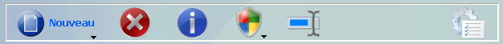
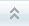
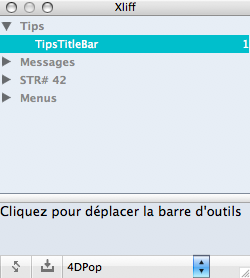
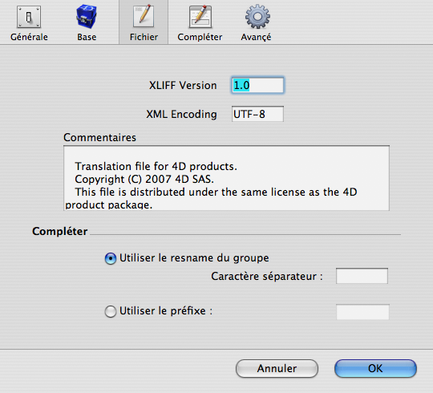

|
|
||||
4DPop XLIFF はデータベースをローカライズするために使用する XLIFF ファイルを管理するために使用します。このデータベースはSTR#やTEXTリソースをXLIFF標準に変換する作業を簡単にします。
コンポーネントとして使用すれば、4DPop XLIFFはデータベース開発中のローカライズファイルを管理します。
スタンドアロンデータベースとして使用すれば、エディタは作業フォルダとして指定したフォルダを管理します。
インストール
| 1. | データベースのストラクチャファイル (".4db") と同階層に "Components" フォルダを作成します。 |
| 2. | "4DPop XLIFF.4dbase"* フォルダまたはそのエイリアスを "Components" フォルダに置きます。 |
| 3. | データベースを開きます。 |
| 4. | "4DPop"コンポーネントを使用している場合、"xliff" ツールはパレットに表示され、クリックすればエディタが表示されます。
"4DPop" コンポーネントがインストールされていない場合、ツールを開くためには "実行" メニューの "メソッド..." を選択し、"xliff_EDITOR" を選択して "実行"ボタンをクリックします。 |

*Macintoshでは、コンポーネントは拡張子が ".4dbase" のコンポーネントです。

使用
4DPop Xliffをコンポーネントとして使用するか、独立したデータベースとして使用するかで、エディタを最初に開いた際の処理が異なります。
- 独立したデータベースとして使用する場合、作業フォルダを指定しなければなりません。これは後ほどエディタの環境設定で変更できます。
- コンポーネントの場合、作業フォルダはデータベースの "Resources" 固定となります。
いずれの場合もそのあとの動作は同じです。
Strategy
エディタはアプリケーション開発時のローカライズを簡単にするという目的で作成されています:
- プロフェッショナルツールとして単純化されたインターフェースを提供。
- 統合されたツールとしてアクセス可能であり、かつ配布時には機能を削除できます。これは新しいコンポーネントアーキテクチャで可能となりました。
- 必要なファイルを作成し、メソッド江日田やフォームエディタ、ツールボックスでの利用がとても簡単にできます。
- 正規化されたファイルを生成することで、ローカライザにそのファイルを提供し、彼らは自身のxliffツールを使用して翻訳yを行うことができます。
XLIFF標準の原理は、sourceで言語を指定し、その言語ですべての文字列を記述することにあります。この言語は参照言語となり、この言語から他の言語に翻訳されます。2番目の言語はtarget と呼ばれ、ダイアログや警告などのインターフェースで使用されます。
エディタは2つの言語を管理するよう作られています。source はしばしばEnglishであり、開発時の言語です。この言語から他の言語に翻訳をおこない、配布します。
最初に開かれるとき、エディタは作業ファイルの内容と、システム言語、およびアプリケーション言語を決定しようとします。この結果、例えば日本語システム上で、sourceがEnglish (en-us)、targetが Japanese (ja) などの判断を行います。フランス語システム上のフランス版４Dの場合は、source も target もフランス語となります。後者のケースは通常あることで、元の言語がフランス語で書かれ、翻訳はフランス語からされることになります。
エディタの環境設定ダイアログでランゲージを変更できますが、4Dは起動時にカレント言語を決定し、それが開発のtarget言語になることを覚えておいてください。もしよくお分かりにならない場合は、4Dのドキュメントで、起動時にどのように言語が決定されるかを参照してください。この選択により、エディタの振る舞いが変わります。
- 1つの言語のみを選択した場合、エディタは一つの文字列の入力を要求します。そしてエディタがその文字列を複製します。保存後、翻訳者に渡すことのできるファイルが出来上がります。 (シナリオ 1)
- source と target 言語が異なる場合、2つの文字列を入力する必要があります。保存時、エディタはローカライズ済みのファイルとローカライズ用のファイルを作成します。 (シナリオ 2)
| source | target | 入力 | Xliff ファイル | 作成されるファイル | |
| シナリオ 1 | fr | fr | source = "Annuler" | <trans-unit> |
 |
| シナリオ 2 | en | fr | source = "Cancel"
target = "Annuler" |
<trans-unit>
|
 |
エディタウィンドウ
インタフェースはプラットフォームとOSで異なります。しかし機能は同じです。
|
 |
|
| Mac OS X | Windows XP | Windows Vista |
マスタウィンドウは5つのエリアに分けられています。
1] ツールバー
ツールバーから機能にアクセスできます。
Mac OS X:

- エディタおよびカレントデータベース環境設定
- カレントのファイル情報
- ファイル追加
- グループ追加
- 文字リソース追加
- ファイル内を検索
- ソースファイルを表示
Windows XP :

- 新規 : ファイル、グループ、文字リソース
- 選択した要素を削除
- エディタおよびカレントデータベース環境設定
- カレントのファイル情報
- ファイル内を検索
- アクション (ステータスバーにボタンの説明)
Windows Vista :

- 新規 : ファイル、グループ、文字リソース
- 選択した要素を削除
- カレントのファイル情報
- アクション (ステータスバーにボタンの説明)
- ファイル内を検索
- エディタおよびカレントデータベース環境設定
2] ファイルのリスト
このエリアには、データベース言語に対応する ".lproj" フォルダのxliffファイルがリストされます。ファイルを選択すると、そのファイルがロードされ、ウィンドウの右側が更新されます。
リストの下には、XPでは固定で、他の場合は設定に従い、選択された要素の属性を表示するエリアがあります。

3] Xliff カレントファイル (文字列リスト)
このエリアには階層リストで、編集中のxliffファイルの group と trans-unit が表示されます。表示されるラベルは resname で右には要素IDが表示されます。要素を選択すると、編集エリアが更新されます。
文字列にメモが割り当てられている場合、アイコンでそのことが示されます。

行をダブルクリックすると、メモを編集するウィンドウが表示されます。メモはウィンドウを閉じるときに保存されます。
4] 要素
このエリアで文字列リソースを追加します。
|
|
|
|
シナリオ 1 - source言語 = target言語 |
シナリオ 2 - source言語 ≠ target言語 |
"Complete"ボタンをクリックすると、 resname は source の内容と環境設定の設定に基づき、自動で設定されます。
5] ステータスバー
ステータスバーには以下の機能がまとめられています。
| ラベル | OS X | XP | Vista | 機能 |
| スイッチ | エディタウィンドウ を閉じて、挿入パレットを表示する。 | |||
| 属性 | - |  | カレントの要素の属性の表示/非表示を切り替える。 | |
| 標準 | サイト www.oasis-open.org を開く。 | |||
| アクション | アクションにアクセスするコンテキストメニュー |
ボタン"アクション" には、現在利用可能なアクションがメニューとして表示されます。
 |
"DTDを使用して検証" は検証を行い、発生した最初のエラーを返します。妥当なファイルはチェックマークが、妥当でないファイルには警告マークがつきます。
"STR# リソースを読み込み " を使用してSTR#リソースを読み込むことができます。この機能を使用して、古いものから新しいローカライズのメカニズムに徐々に移行することが可能です。これを動作させるには、リソースを "Localized.rsrc" ファイルに置きます。 source とカレントの言語が異なる場合、それぞれのファイルを用意します。リソース番号を指定すると、それが有効か検証したのち、groupが作成されます。 |
コピー/ペースト
グループを選択して編集メニューからコピーを行うと、名前と定義がクリップボードに格納されます。そののち、編集メニューからペーストを選択すると、他のファイルやカレントのファイルにコピーできます。
文字リストを選択してコピーを選択すると、テキスト参照 (":xliff:resname") とその定義がクリップボードに格納されます。そののち、カレントファイルの他のグループや他のファイルにペーストできます。参照は入力エリアにペーストできます。
メソッドやフォームオブジェクトにxliff参照を挿入する
1] ドラッグ＆ドロップ
xliff参照の挿入は、文字のリストからドラッグ＆ドロップで行うことができます。結果はドラッグされた要素 (グループまたは文字列) 、ドロップ先のウィンドウ、そしてモディファイアキーにより異なります:
| ドラッグされた要素 | フロントウィンドウ | アクション | ||||||
| 文字* | メソッドエディタ | ペーストされるテキスト: "Get localized string ("Resname")"
文字列が {..} を含む場合、挿入されるテキストは : "Replace string(Get localized string("Resname");"{...}"; replacement)" |
||||||
| 文字* | フォームエディタ |
|
||||||
| 文字* | テキスト入力エリア
例： メニュータイトルやメニューエディタの行 |
ペーストされるテキスト:
":xliff:Resname" |
||||||
| グループ | メソッドエディタ | ペーストされるテキスト: (グループから配列を作成) "ARRAY TEXT($tTxt_Labels;N) resnames がインクリメント (Resname1, Resname2, ..., ResnameN) する場合、ペーストされるテキストは: |
||||||
| グループ
+ Capital |
メソッドエディタ | ペーストされるテキスト: (グループからメニューを作成) "$a16_Menu:=Create menu resnames がインクリメント (Resname1, Resname2, ..., ResnameN) する場合、ペーストされるテキストは: |
* コンテナ中のテキストは、ドラッグが開始された時の最前面のウィンドウタイプに基づいて決定されます。ドラッグ開始時にOption/Altキーを押すと、コードまたは参照どちらを挿入するか、動作を反転させることができます。
2] コピー/ペースト
文字リストの行を選択してコピーし、プロパティリストの入力エリア等にペーストできます。これはドラッグ＆ドロップではできません。クリップボードには ":xliff:Resname" の形式で格納されます。
挿入パレット
文字列を作成したら、カレントファイルの文字リストエリアとカレントファイルの選択メニューだけで構成された小さなパレットを使用できます。

ドラッグ＆ドロップとコピー/ペーストが、xliff参照を4Dエディタに挿入するために使用できます。パレットのファイルを変更することはできません。
文字列リストをステータスバーの間にあるエリアは、カレントの言語で選択された文字列を表示します。
環境設定
エディタウィンドウやパレットの位置、最後に編集されたファイル、エディタ内のスプリッタの位置は自動で記録され、次回開いた際に再現されます。
エディタのアイコンから、エディタの環境設定にアクセスできます。
1] 一般環境設定

a) カレントのリソースフォルダ
スタンドアロンデータベースにおいて、作業フォルダを指定するために使用します。データベースがコンポーネントと使用されている場合、作業フォルダは常にデータベースのResourcesフォルダです。
b) デフォルト値
使用するxliffのバージョン、XMLのエンコーディング、新規ファイルを作成する際のデフォルトコメントです。
コメントは{...}で囲まれた参照をサポートします。これはファイル生成時に解釈されます:
- {year} は年で置き換えられます。
- {month} は月で置き換えられます。
- {date} は日で置き換えられます。
- {database} はストラクチャファイル名で置き換えられます。
2] カレントの基本パラメタ
ここでsource と target 言語を設定します。
3] カレントのファイルパラメタ

a) カレントファイルの属性
このページではカレントのファイルの属性 (xliffバージョン、エンコード、そしてコメント) を表示し、また変更できます。
a) Complete
カレントファイルの resnames の自動決定動作を定義します。これは " Complete" ボタンの動作を変更します。
4] Auto completion parameters (interbase)

注 : 環境設定は4Dフォルダの "4D XLIFF Editor preference.xml" ファイルに書き込まれます。"Preferences" フォルダにはデータベース固有の設定が格納されます。
ソースコード
このコンポーネントはコンパイル版で提供されますが、コンポーネントフォルダ内の"Sources" フォルダにはソースコードが含まれています。